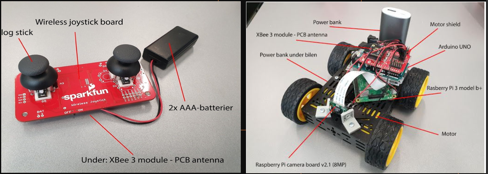
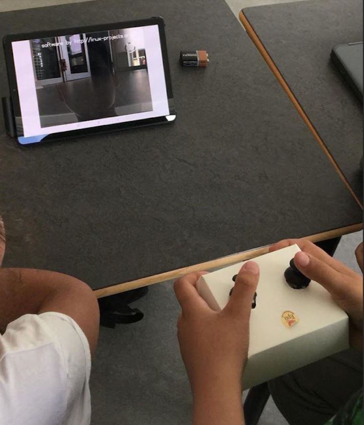

SpyCar - Spionbil til børn
Her har jeg været med til at skabe et legeartifakt, der kan være med til at vække børns interesse for både leg, men også for robotteknologi og programmering.
Prototypen i aktion:

SpyCar er en sammenfatning af komponenter heriblandt et kamera, mikrofon, arduino og raspberry pi, der alt sammen er forbundet til vores RC (Remote Controlled) car.
Der vises et livefeed på en iPad sendt direkte i realtime via en lokal server forbindelse til den forbundne raspberry pi i bilen.
Bilen styres trådløst med en selvbygget controller.